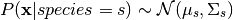
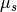
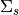

Real Valued Data and the Normal Inverse-Wishart Distribution¶
One of the most common forms of data is real valued data
Let’s set up our environment and consider an example dataset
import pandas as pd
import seaborn as sns
import numpy as np
import matplotlib.pyplot as plt
%matplotlib inline
sns.set_context('talk')
sns.set_style('darkgrid')
The Iris Flower Dataset is a standard machine learning data set dating back to the 1930s. It contains measurements from 150 flowers, 50 from each of the following species:
- Iris Setosa
- Iris Versicolor
- Iris Virginica
iris = sns.load_dataset('iris')
iris.head()
| sepal_length | sepal_width | petal_length | petal_width | species | |
|---|---|---|---|---|---|
| 0 | 5.1 | 3.5 | 1.4 | 0.2 | setosa |
| 1 | 4.9 | 3.0 | 1.4 | 0.2 | setosa |
| 2 | 4.7 | 3.2 | 1.3 | 0.2 | setosa |
| 3 | 4.6 | 3.1 | 1.5 | 0.2 | setosa |
| 4 | 5.0 | 3.6 | 1.4 | 0.2 | setosa |
In the case of the iris dataset, plotting the data shows that
indiviudal species exhibit a typical range of measurements
irisplot = sns.pairplot(iris, hue="species", palette='Set2', diag_kind="kde", size=2.5)
irisplot.fig.suptitle('Scatter Plots and Kernel Density Estimate of Iris Data by Species', fontsize = 18)
irisplot.fig.subplots_adjust(top=.9)

If we wanted to learn these underlying species’ measurements, we would use these real valued measurements and make assumptions about the structure of the data.
In practice, real valued data is commonly assumed to be distributed normally, or Gaussian
We could assume that conditioned on species, the measurement data
follwed a multivariate normal

The normal inverse-Wishart distribution allows us to learn the
underlying parameters of each normal distribution, its mean
 and its covariance . Since the normal
inverse-Wishart is the conjugate prior of the multivariate normal, the
posterior distribution of a multivariate normal with a normal
inverse-Wishart prior also follows a normal inverse-Wishart
distribution. This allows us to infer the distirbution over values of
and  when we define our model.
when we define our model.
Note that if we have only one real valued variable, the normal
inverse-Wishart distribution is often referred to as the normal
inverse-gamma distribution. In this case, we learn the scalar valued
mean  and variance
and variance  for each inferred
cluster.
for each inferred
cluster.
Univariate real data, however, should be modeled with our normal invese-chi-squared distribution, which is optimized for infering univariate parameters.
See Murphy 2007 for derrivations of our normal likelihood models
To specify the joint distribution of a multivariate normal inverse-Wishart distribution, we would import our likelihood model
from microscopes.models import niw as normal_inverse_wishart